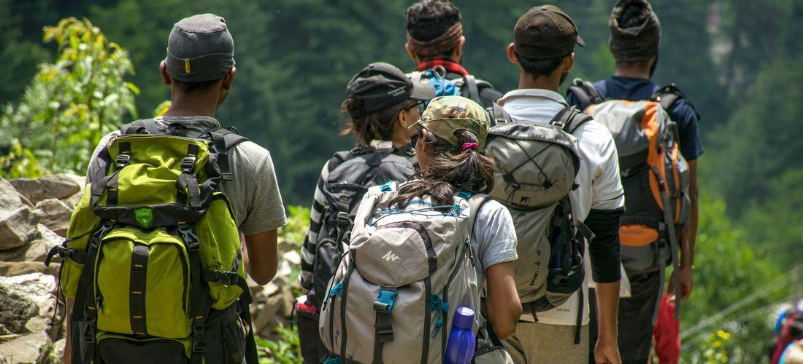

Hutan Gunung
Hutan Gunung bergerak dalam kegiatan pendakian, petualangan, lintas alam yang terfokus pada gunung dan hutan. Selain itu juga pembelajaran materi yang terkait dengan divisi tersebut misalnya adalah navigasi darat, SAR, survival, dll.
Rock Climbing
Rock Climbing ini bergerak dalam kegiatan panjat, baik itu panjat tebing ataupun panjat dinding. Selain itu ada juga kegiatan frusiking dan refling. Rock Climbing ini diharapkan mampu melahirkan seorang atlet yang mempunyai potensi yang dapat diandalkan. Salah satunya dengan mengadakan latihan rutin dan diadakan penyeleksian yang berkala terhadap atlet/ calon atlet yang nantinya atlet-atlet ini sewaktu-waktu dapat di delegasikan ketika ada event panjat.
Susur Pantai
Susur Pantai bergerak dalam kegiatan penyusuran pantai yang terfokus pada tujuan dari penelitian kegiatan tersebut. Biasanya susur pantai dilakukan untuk meneliti seberapa parah abrasi yang terjadi di wilayah pantai, atau juga dilakukan untuk meneliti keadaan flora dan fauna yang terdapat di daerah pantai